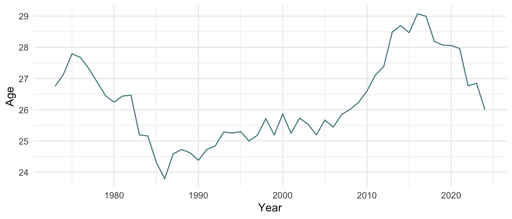

Rank | Name | Birth Year | Country | Total Points | Victory Points | Bonus Points | Victories | Defeats | Win Percent |
|---|---|---|---|---|---|---|---|---|---|
15 | Ken Rosewall | 1934 | Australia | 3,509 | 2,699 | 810 | 92 | 19 | 82.88% |
178 | Mal Anderson | 1935 | Australia | 163 | 103 | 60 | 13 | 9 | 59.09% |
102 | Roy Emerson | 1936 | Australia | 596 | 556 | 40 | 32 | 12 | 72.73% |
67 | Andres Gimeno | 1937 | Spain | 1,067 | 837 | 230 | 35 | 14 | 71.43% |
24 | Rod Laver | 1938 | Australia | 2,707 | 2,137 | 570 | 60 | 10 | 85.71% |
105 | Nikola Pilic | 1939 | Croatia | 565 | 495 | 70 | 39 | 21 | 65.00% |
148 | Earl Butch Buchholz | 1940 | United States | 292 | 262 | 30 | 13 | 5 | 72.22% |
117 | Roger Taylor | 1941 | United Kingdom | 462 | 362 | 100 | 37 | 27 | 57.81% |
109 | Dennis Ralston | 1942 | United States | 517 | 457 | 60 | 29 | 14 | 67.44% |
21 | Arthur Ashe | 1943 | United States | 3,114 | 2,494 | 620 | 106 | 28 | 79.10% |
16 | John Newcombe | 1944 | Australia | 3,349 | 2,559 | 790 | 93 | 21 | 81.58% |
32 | Tony Roche | 1945 | Australia | 2,089 | 1,719 | 370 | 68 | 24 | 73.91% |
31 | Ilie Nastase | 1946 | Romania | 2,207 | 1,737 | 470 | 98 | 41 | 70.50% |
107 | Onny Parun | 1947 | New Zealand | 560 | 460 | 100 | 51 | 38 | 57.30% |
224 | Ian Fletcher | 1948 | Australia | 66 | 66 | 0 | 14 | 13 | 51.85% |
71 | Manuel Orantes | 1949 | Spain | 1,024 | 764 | 260 | 66 | 26 | 71.74% |
83 | Adriano Panatta | 1950 | Italy | 864 | 674 | 190 | 62 | 30 | 67.39% |
33 | Roscoe Tanner | 1951 | United States | 1,962 | 1,632 | 330 | 90 | 33 | 73.17% |
5 | Jimmy Connors | 1952 | United States | 7,836 | 6,036 | 1,800 | 233 | 49 | 82.62% |
93 | Raul Ramirez | 1953 | Mexico | 718 | 568 | 150 | 60 | 31 | 65.93% |
50 | Vitas Gerulaitis | 1954 | United States | 1,465 | 1,065 | 400 | 85 | 37 | 69.67% |
175 | Victor Pecci | 1955 | Paraguay | 171 | 81 | 90 | 30 | 27 | 52.63% |
9 | Bjorn Borg | 1956 | Sweden | 6,407 | 4,937 | 1,470 | 141 | 16 | 89.81% |
348 | Markus Gunthardt | 1957 | Switzerland | -1 | -1 | 0 | 0 | 1 | 0.00% |
62 | Johan Kriek | 1958 | United States | 1,110 | 760 | 350 | 81 | 34 | 70.43% |
10 | John McEnroe | 1959 | United States | 5,328 | 4,078 | 1,250 | 167 | 38 | 81.46% |
4 | Ivan Lendl | 1960 | United States | 7,984 | 6,194 | 1,790 | 222 | 49 | 81.92% |
227 | Ramesh Krishnan | 1961 | India | 62 | 32 | 30 | 41 | 39 | 51.25% |
255 | Wayne Hearn | 1962 | United States | 32 | 32 | 0 | 1 | 1 | 50.00% |
89 | Henri Leconte | 1963 | France | 753 | 553 | 200 | 78 | 44 | 63.93% |
13 | Mats Wilander | 1964 | Sweden | 4,861 | 3,771 | 1,090 | 144 | 37 | 79.56% |
51 | Pat Cash | 1965 | Australia | 1,443 | 1,123 | 320 | 68 | 33 | 67.33% |
12 | Stefan Edberg | 1966 | Sweden | 5,058 | 3,848 | 1,210 | 178 | 47 | 79.11% |
11 | Boris Becker | 1967 | Germany | 5,079 | 3,949 | 1,130 | 163 | 40 | 80.30% |
45 | Michael Stich | 1968 | Germany | 1,602 | 1,252 | 350 | 78 | 31 | 71.56% |
66 | Cedric Pioline | 1969 | France | 1,079 | 859 | 220 | 76 | 47 | 61.79% |
7 | Andre Agassi | 1970 | United States | 6,857 | 5,207 | 1,650 | 224 | 53 | 80.87% |
6 | Pete Sampras | 1971 | United States | 7,518 | 5,668 | 1,850 | 203 | 38 | 84.23% |
40 | Michael Chang | 1972 | United States | 1,829 | 1,379 | 450 | 120 | 56 | 68.18% |
135 | Hicham Arazi | 1973 | Morocco | 352 | 312 | 40 | 46 | 35 | 56.79% |
34 | Yevgeny Kafelnikov | 1974 | Russia | 1,956 | 1,536 | 420 | 99 | 36 | 73.33% |
104 | Marcelo Rios | 1975 | Chile | 580 | 470 | 110 | 51 | 26 | 66.23% |
58 | Gustavo Kuerten | 1976 | Brazil | 1,190 | 840 | 350 | 65 | 30 | 68.42% |
134 | Nicolas Kiefer | 1977 | Germany | 356 | 286 | 70 | 60 | 44 | 57.69% |
68 | Tommy Haas | 1978 | Germany | 1,053 | 893 | 160 | 105 | 59 | 64.02% |
170 | James Blake | 1979 | United States | 191 | 161 | 30 | 60 | 42 | 58.82% |
30 | Marat Safin | 1980 | Russia | 2,350 | 1,920 | 430 | 95 | 38 | 71.43% |
2 | Roger Federer | 1981 | Switzerland | 14,800 | 11,570 | 3,230 | 369 | 60 | 86.01% |
22 | Andy Roddick | 1982 | United States | 2,926 | 2,346 | 580 | 131 | 45 | 74.43% |
56 | Fernando Verdasco | 1983 | Spain | 1,294 | 1,234 | 60 | 113 | 71 | 61.41% |
72 | Robin Soderling | 1984 | Sweden | 991 | 831 | 160 | 51 | 31 | 62.20% |
14 | Stan Wawrinka | 1985 | Switzerland | 3,722 | 3,122 | 600 | 158 | 69 | 69.60% |
3 | Rafael Nadal | 1986 | Spain | 13,060 | 10,050 | 3,010 | 314 | 44 | 87.71% |
1 | Novak Djokovic | 1987 | Serbia | 16,247 | 12,597 | 3,650 | 377 | 51 | 88.08% |
23 | Marin Cilic | 1988 | Croatia | 2,870 | 2,480 | 390 | 138 | 57 | 70.77% |
37 | Kei Nishikori | 1989 | Japan | 1,884 | 1,674 | 210 | 103 | 45 | 69.59% |
47 | Milos Raonic | 1990 | Canada | 1,592 | 1,402 | 190 | 92 | 37 | 71.32% |
81 | Grigor Dimitrov | 1991 | Bulgaria | 881 | 741 | 140 | 97 | 56 | 63.40% |
141 | Marton Fucsovics | 1992 | Hungary | 311 | 301 | 10 | 29 | 30 | 49.15% |
36 | Dominic Thiem | 1993 | Austria | 1,895 | 1,535 | 360 | 75 | 36 | 67.57% |
387 | Andrew Harris | 1994 | Australia | -4 | -4 | 0 | 0 | 1 | 0.00% |
69 | Nick Kyrgios | 1995 | Australia | 1,047 | 957 | 90 | 54 | 31 | 63.53% |
28 | Daniil Medvedev | 1996 | Russia | 2,458 | 1,948 | 510 | 88 | 29 | 75.21% |
35 | Alexander Zverev | 1997 | Germany | 1,903 | 1,553 | 350 | 101 | 35 | 74.26% |
64 | Stefanos Tsitsipas | 1998 | Greece | 1,100 | 840 | 260 | 65 | 29 | 69.15% |
116 | Denis Shapovalov | 1999 | Canada | 475 | 425 | 50 | 43 | 27 | 61.43% |
190 | Jenson Brooksby | 2000 | United States | 121 | 121 | 0 | 10 | 8 | 55.56% |
48 | Jannik Sinner | 2001 | Italy | 1,578 | 1,268 | 310 | 61 | 18 | 77.22% |
185 | Lorenzo Musetti | 2002 | Italy | 142 | 112 | 30 | 21 | 15 | 58.33% |
29 | Carlos Alcaraz | 2003 | Spain | 2,428 | 1,938 | 490 | 60 | 11 | 84.51% |
317 | Arthur Fils | 2004 | France | 1 | 1 | 0 | 6 | 7 | 46.15% |
253 | Juncheng Shang | 2005 | China | 33 | 33 | 0 | 6 | 5 | 54.55% |
588 | Henry Searle | 2006 | United Kingdom | -23 | -23 | 0 | 0 | 1 | 0.00% |
Age
This page ranks the top tennis player born in each year. It also displays the average age of each tennis player in the ATP top 100.
